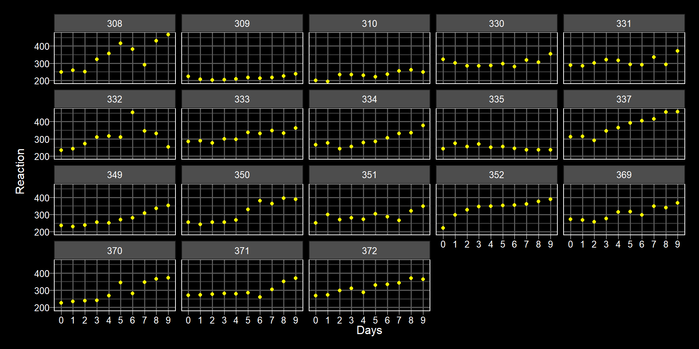
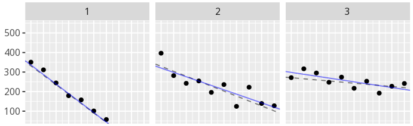

lm(Reaction ~ Days, data = sleepstudy)
# gives same intercept and slope (blue line) to allStatistical Models
Lecture 5 - Linear Mixed Effects Models
Overview
- introduction to linear mixed-effects modeling
- example: sleepstudy data (Belenky et al, 2003)
- distinguish complete pooling, no pooling and partial pooling approaches
- understand the Data Generation Process (DGP) behind multi-level data and estimation with
lme4::lmer()lm()- linear modellmer()- linear mixed effects regression- need to
install.packages("lme4")first time.
- need to
Single-level vs Multi-level
- Single-level means we have one observation or one data point per sampling unit
- one response from each participant/stimuli
- Multi-level means we have more than one observation or data point per sampling unit
- more than one response from each participant/stimuli
- Both, in today’s context, are still univariate in that they are only interested in one DV.
- All the techniques we have looked at over past 5 weeks are still part of the General Linear Model and effectively regression
- t-test, correlations, anovas, simple regression, multiple regression, linear mixed effects models
- the underlying basis of \(\hat{Y} = \beta_0 + \beta_1 \times X\) applies across all
- the complexity within the models has been increasing as we have gone through them but to paraphrase “with greater complexity, comes greater power!”
Multilevel data
- All parametric models assume model residuals are IID (“independently and identically distributed”) which won’t be the case when you have multiple observations per sampling unit (e.g. participant).
- Data often has ‘clusters’ of correlated observations due to
- multistage sampleing & natural clustering
- for example, individual differences in reaction time will be smaller within a participant than across participants.
pros and cons of LMEMs
Cons
- Complex
- Estimated iteratively and may not converge!
Convergence
- Unlike simple regression, which will always give a solution based on the formula, LMEMs are an algorithmic interative process based on finding the best soltuion to the parameter estimates (e.g. \(\beta\)). When it does this it is said to converge.
pros and cons of LMEMs
Pros
- powerful and expressive
- modeling of continuous & categorical predictors
- unbalanced/missing data (partial pooling)
- discrete DVs and/or non-normal distributions
- multiple random factors
Random vs Fixed Factors
- until now we have assumed fixed factors - the value of the estimate wont change across sampling unit (e.g. participants)
- not always the case and often we know there will be variation
- LMEMs all us to state some factors as random meaning we expect some variation
- helps improve generalisability of the findings
Random vs Fixed Factors
- more often than not you expect participants to have variation, not just within your sample but also from your sample to the population.
- same with faces, voices, and a whole host of stimuli
- Distinction can come from if you care only about the participants/stimuli used (fixed) or about all possible participants/stimuli in that factor (random)
- a study to compare engagement of art masterpieces using the Mona Lisa (random)
- a study to compare engagement with the Mona Lisa (fixed)
- exchangability - does it matter what is labelled as Participant 1 or Stim 1.
- if it does not matter, then random factor
- if it does matter, then fixed factor
Understanding multi-level modeling
Belenky et al. (2003)
Worked example: Belenky et al. (2003) sleepstudy data used in formative 2 of this module; in the lme4 package.

Belenky et al. (2003)
Abstract: Daytime performance changes were examined during chronic sleep restriction or augmentation and following subsequent recovery sleep. Sixty-six normal volunteers spent either 3 (n = 18), 5 (n= 16), 7 (n = 16), or 9 h (n = 16) daily time in bed (TIB) for 7 days (restriction/augmentation) followed by 3 days with 8 h daily TIB (recovery). In the 3-h group, speed (mean and fastest 10% of responses) on the psychomotor vigilance task (PVT) declined, and PVT lapses (reaction times greater than 500 ms) increased steadily across the 7 days of sleep restriction…
Belenky et al. (2003)
- observations within each subject show some relationship
- violates assumption of independence of data points
Approaches to Multi-level data
- complete pooling
- ignore dependencies in the data
- no pooling
- account for dependencies by fitting each subject independently
- partial pooling
- account for dependencies by explicitly modeling them
- fit for each subject informed by the fits for other subjects
Complete Pooling

- each facet is a participant; each dot an RT on sequential days; blue line is estimated line from complete pooling; dashed black line is true relationship in each participant
- fit is not good
No Pooling

- fit is much better (blue and black sit much closer)
- however doesn’t give an “overall” as everything is relative to baseline
No Pooling
Call:
lm(formula = Reaction ~ Days * Subject, data = sleepstudy)
Residuals:
Min 1Q Median 3Q Max
-106.397 -10.692 -0.177 11.417 132.510
Coefficients:
Estimate Std. Error t value Pr(>|t|)
(Intercept) 244.193 15.042 16.234 < 2e-16 ***
Days 21.765 2.818 7.725 1.74e-12 ***
Subject309 -39.138 21.272 -1.840 0.067848 .
Subject310 -40.708 21.272 -1.914 0.057643 .
Subject330 45.492 21.272 2.139 0.034156 *
Subject331 41.546 21.272 1.953 0.052749 .
Subject332 20.059 21.272 0.943 0.347277
Subject333 30.826 21.272 1.449 0.149471
Subject334 -4.030 21.272 -0.189 0.850016
Subject335 18.842 21.272 0.886 0.377224
Subject337 45.911 21.272 2.158 0.032563 *
Subject349 -29.081 21.272 -1.367 0.173728
Subject350 -18.358 21.272 -0.863 0.389568
Subject351 16.954 21.272 0.797 0.426751
Subject352 32.179 21.272 1.513 0.132535
Subject369 10.775 21.272 0.507 0.613243
Subject370 -33.744 21.272 -1.586 0.114870
Subject371 9.443 21.272 0.444 0.657759
Subject372 22.852 21.272 1.074 0.284497
Days:Subject309 -19.503 3.985 -4.895 2.61e-06 ***
Days:Subject310 -15.650 3.985 -3.928 0.000133 ***
Days:Subject330 -18.757 3.985 -4.707 5.84e-06 ***
Days:Subject331 -16.499 3.985 -4.141 5.88e-05 ***
Days:Subject332 -12.198 3.985 -3.061 0.002630 **
Days:Subject333 -12.623 3.985 -3.168 0.001876 **
Days:Subject334 -9.512 3.985 -2.387 0.018282 *
Days:Subject335 -24.646 3.985 -6.185 6.07e-09 ***
Days:Subject337 -2.739 3.985 -0.687 0.492986
Days:Subject349 -8.271 3.985 -2.076 0.039704 *
Days:Subject350 -2.261 3.985 -0.567 0.571360
Days:Subject351 -15.331 3.985 -3.848 0.000179 ***
Days:Subject352 -8.198 3.985 -2.057 0.041448 *
Days:Subject369 -10.417 3.985 -2.614 0.009895 **
Days:Subject370 -3.709 3.985 -0.931 0.353560
Days:Subject371 -12.576 3.985 -3.156 0.001947 **
Days:Subject372 -10.467 3.985 -2.627 0.009554 **
---
Signif. codes: 0 '***' 0.001 '**' 0.01 '*' 0.05 '.' 0.1 ' ' 1
Residual standard error: 25.59 on 144 degrees of freedom
Multiple R-squared: 0.8339, Adjusted R-squared: 0.7936
F-statistic: 20.66 on 35 and 144 DF, p-value: < 2.2e-16- generates an intercept and slope coefficient for all subjects where the values are the offset to the baseline participant
- e.g. 244 is mean RT of Subject 308 (baseline) and 244 + (-39.138) is intercept for Subject 309.
- hard to interpret
- would need to then do something with all values to establish effect or not.
Partial Pooling
- as good as no pooling but as well as fitting individual slopes and intercepts per participant, it makes and adjustment to each participant based on the other participants
- takes into consideration that similarity in samples (e.g. students within a classroom)
- gives an overall effect (fixed effect) and an effect for variation (random effect)
DGP and estimation
GLM for sleepstudy
Level 1:
\[Y_{ij} = \beta_0 + \beta_1 X_{ij} + e_{ij}\]
Level 2:
\[\beta_0 = \gamma_{00} + S_{0i}\]
\[\beta_1 = \gamma_{10} + S_{1i}\]
GLM for sleepstudy
Level 1:
\[Y_{ij} = \beta_0 + \beta_1 X_{ij} + e_{ij}\]
- \(Y_{ij}\) is the predicted reaction time (Y) for a given participant (i) on a given day (j)
- So if you new the intercept and slope, and if X was say day 1, then: intercept + slope \(\times\) 1 = Y
Level 2: New part
\[\beta_0 = \gamma_{00} + S_{0i}\]
- Intercept (\(\beta_0\)) is made up of a fixed effect (\(\gamma_{00}\), gamma zero zero) and a random effect (\(S_{0i}\), S zero i)
- The fixed effect (\(\gamma_{00}\), gamma zero zero) is the overall intercept (e.g. overall mean reaction time)
- The random effect (\(S_{0i}\), S zero i) is the intercept offset to take into account the variation across participants. One random intercept per participant.
\[\beta_1 = \gamma_{10} + S_{1i}\]
- Slope (\(\beta_1\)) is made up of a fixed effect (\(\gamma_{10}\), gamma one zero) and a random effect (\(S_{1i}\), S one i)
- The fixed effect (\(\gamma_{10}\), gamma one zero) is the overall slope (e.g. overall relationship between days and RT)
- The random effect (\(S_{1i}\), S one i) is the slope offset to take into account the variation across participants. One random slope per participant.
- linear model
\[Y_{ij} = \beta_0 + \beta_1 X_{ij} + e_{ij}\]
- linear mixed effects model
\[Y_{ij} = (\gamma_{00} + S_{0i}) + (\gamma_{10} + S_{1i}) X_{ij} + e_{ij}\]
- But everything is still just Y equals intercept plus slope times X plus error, just in LMEM the intercept and slope are made up of a fixed and random effect each.
Made up example:
- Participant 1, Day 5
- overall intercept (mean RT) = 250 msecs
- intercept offset for participant 1 = 20 msecs
- overall slope (relationship) = 10
- slope offset for participant 1 = 8
\[Y_{ij} = (\gamma_{00} + S_{0i}) + (\gamma_{10} + S_{1i}) X_{ij} + e_{ij}\]
\[Y_{ij} = (250 + 20) + (10 + 8) \times 5 = 360\]
Made up example:
- Participant 1, Group 1 where Group 1 is coded as 0.5 (\(\frac{1}{2}\))
- overall intercept (mean RT) = 250 msecs
- intercept offset for participant 1 = 20 msecs
- overall slope (relationship) = 10
- slope offset for participant 1 = 8
\[Y_{ij} = (\gamma_{00} + S_{0i}) + (\gamma_{10} + S_{1i}) X_{ij} + e_{ik}\]
\[Y_{ij} = (250 + 20) + (10 + 8) \times .5 = 279\]
Variance Components
\[\left< S_{0i}, S_{1i} \right> \sim N(\left< 0, 0 \right>, \mathbf{\Sigma})\]
\[\mathbf \Sigma = \left( \begin{array}{cc} {\tau_{00}}^2 & \rho\tau_{00}\tau_{11} \\ \rho\tau_{00}\tau_{11} & {\tau_{11}}^2 \\ \end{array} \right)\]
\[e_{ij} \sim N(0, \sigma^2)\]
- the random intercept (\(S_{0i}\)) and slope (\(S_{1i}\)) are estimated from a Normal Distribution (\(N\)) with means of 0, and covariance of sigma (\(\Sigma\))
- sigma (\(\Sigma\)) is a covariance matrix of the intercept variance (\({\tau_{00}}^2\)), the slope variance(\({\tau_{11}}^2\)), and the covariance of the slope and intercept (\(\rho\tau_{00}\tau_{11}\))
Variance Components
\[\left< S_{0i}, S_{1i} \right> \sim N(\left< 0, 0 \right>, \mathbf{\Sigma})\]
\[\mathbf \Sigma = \left( \begin{array}{cc} {\tau_{00}}^2 & \rho\tau_{00}\tau_{11} \\ \rho\tau_{00}\tau_{11} & {\tau_{11}}^2 \\ \end{array} \right)\]
\[e_{ij} \sim N(0, \sigma^2)\]
LMEM is effectively estimating The Variance Components:
- \({\tau_{00}}^2\) - intercept variance
- \({\tau_{11}}^2\) - slope variance
- \(\rho\) - correlation between slope and intercept
- \(\sigma^2\) - variance in error
Estimation
- funtion:
lmer() Reaction ~ Daysis common syntax by now(Days | Subjects)says let effect of days vary across subjects. This is actually the syntax for a random slope; must be within brackets.- Don’t need to say give random intercept as well as it is implied but would be written as
(1 | Subjects) - So
(1 + Days | Subjects)says give me random intercepts and slopes and is same as(Days | Subjects)
Estimation
Linear mixed model fit by REML ['lmerMod']
Formula: Reaction ~ Days + (Days | Subject)
Data: sleepstudy
REML criterion at convergence: 1743.6
Scaled residuals:
Min 1Q Median 3Q Max
-3.9536 -0.4634 0.0231 0.4634 5.1793
Random effects:
Groups Name Variance Std.Dev. Corr
Subject (Intercept) 612.10 24.741
Days 35.07 5.922 0.07
Residual 654.94 25.592
Number of obs: 180, groups: Subject, 18
Fixed effects:
Estimate Std. Error t value
(Intercept) 251.405 6.825 36.838
Days 10.467 1.546 6.771
Correlation of Fixed Effects:
(Intr)
Days -0.138Output:
- REML = Restricted Maximum Likelihood
- \(\gamma_{00}\) = 251.405
- \(\gamma_{10}\) = 10.467
- \({\tau_{00}}^2\) = 612.10
- \({\tau_{11}}^2\) = 35.07
- \(\rho\) = .07
- \(\sigma^2\) = 654.94
- \(\sigma\) = 25.692
- \(cov\) = .07 * 24.741 * 5.922
model syntax
DV ~ iv1 + iv2 + (iv1 | random_factor)
lmer(Reaction ~ Days + (1 | Subject), sleepstudy) # (1) random intercept
lmer(Reaction ~ Days + (1 + Days | Subject), sleepstudy) # (2) random slope model.
lmer(Reaction ~ Days + (Days | Subject), sleepstudy) # (3) identical to (2)
lmer(Reaction ~ Days + (1 | Subject) + (0 + Days | Subject)) # (4) zero-covariances
lmer(Reaction ~ Days + (Days || Subject), sleepstudy) # (5) identical to (4)(1)seems a bit redundant because if you think the intercept is going to vary then the slope will vary too(2)and(3)are the same, random slope and random intercepts. Most common approach.(4)and(5)are identical and says assume no correlation - so same intercept but different slopes
p-values: model comparison
- Create two models.
- One with the fixed effect (
mod_full) and one without the fixed effect (mod_base).
- One with the fixed effect (
- Idea is saying “accounting for all the random variation within the data, is there still a significant fixed effect”.
- \(H_0\): mod_full \(=\) mod_base
- \(H_1\): mod_full \(\ne\) mod_base
p-values: model comparison
# A tibble: 2 × 8
npar AIC BIC logLik `-2*log(L)` Chisq Df `Pr(>Chisq)`
<dbl> <dbl> <dbl> <dbl> <dbl> <dbl> <dbl> <dbl>
1 5 1785. 1801. -888. 1775. NA NA NA
2 6 1764. 1783. -876. 1752. 23.5 1 0.00000123- \(\chi^2\)(1) = 23.5, p < .001
- so yes there was a significant effect.